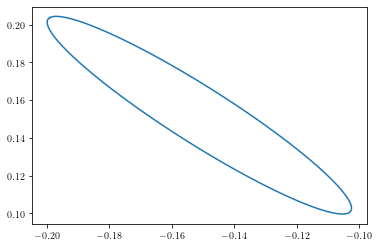
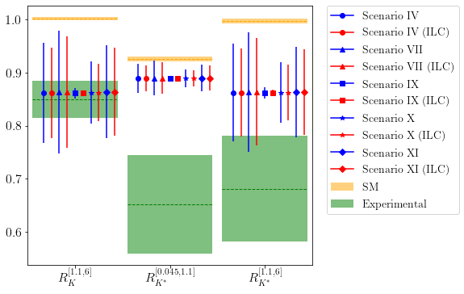
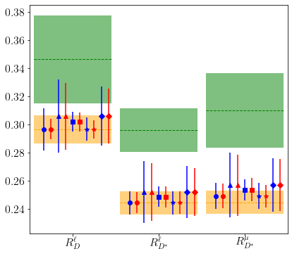

Confidence intervals for observables¶
import SMEFT19
import matplotlib.pyplot as plt
import numpy as np
import yaml
scs = [SMEFT19.scenarios.scIV, SMEFT19.scenarios.scVII, SMEFT19.scenarios.scIX, SMEFT19.scenarios.scX, SMEFT19.scenarios.scXI]
dictsc = [SMEFT19.ellipse.load(f'../data/ellipses/{s.__name__}_ILC.yaml') for s in scs]
def recursiveDict(d):
for k, v in d.items():
if isinstance(v, dict):
d[k] = recursiveDict(v)
return dict(d)
1D fits¶
supIX = []
infIX = []
for o in SMEFT19.obsuncert.obslist:
infIX.append(SMEFT19.SMEFTglob.prediction(dictsc[2]['bf'] - (1/dictsc[2]['d'])**0.5, o, scs[2]))
supIX.append(SMEFT19.SMEFTglob.prediction(dictsc[2]['bf'] + (1/dictsc[2]['d'])**0.5, o, scs[2]))
with open('../data/observables/obsIX_ILC.yaml', 'rt') as f:
yamlIX = yaml.safe_load(f)
for i, o in enumerate(SMEFT19.obsuncert.obslist):
uStat = abs(supIX[i]-infIX[i])
yamlIX[str(o)]['NP']['uncert'] = float((yamlIX[str(o)]['NP']['uncert']**2-yamlIX[str(o)]['NP']['uStat']**2+uStat**2)**0.5)
yamlIX[str(o)]['NP']['uStat'] = float(uStat)
with open('../data/observables/obsIX_ILC.yaml', 'wt') as f:
yaml.dump(recursiveDict(yamlIX), f)
supX = []
infX = []
for o in SMEFT19.obsuncert.obslist:
infX.append(SMEFT19.SMEFTglob.prediction(dictsc[3]['bf'] - (1/dictsc[3]['d'])**0.5, o, scs[3]))
supX.append(SMEFT19.SMEFTglob.prediction(dictsc[3]['bf'] + (1/dictsc[3]['d'])**0.5, o, scs[3]))
with open('../data/observables/obsX_ILC.yaml', 'rt') as f:
yamlX = yaml.safe_load(f)
for i, o in enumerate(SMEFT19.obsuncert.obslist):
uStat = abs(supX[i]-infX[i])
yamlX[str(o)]['NP']['uncert'] = float((yamlX[str(o)]['NP']['uncert']**2-yamlX[str(o)]['NP']['uStat']**2+uStat**2)**0.5)
yamlX[str(o)]['NP']['uStat'] = float(uStat)
with open('../data/observables/obsX_ILC.yaml', 'wt') as f:
yaml.dump(recursiveDict(yamlX), f)
2D fits¶
x = []
y = []
for theta in np.linspace(0, 2*np.pi, 100):
p = SMEFT19.ellipse.parametrize((np.cos(theta), np.sin(theta)), dictsc[0]['bf'], dictsc[0]['v'], dictsc[0]['d'])
x.append(p[0])
y.append(p[1])
plt.plot(x, y)
[]

minIV =[float('inf')]*len(SMEFT19.obsuncert.obslist)
maxIV =[-float('inf')]*len(SMEFT19.obsuncert.obslist)
for xp, yp in zip(x, y):
for i, o in enumerate(SMEFT19.obsuncert.obslist):
p = SMEFT19.SMEFTglob.prediction((xp, yp), o, scs[0])
minIV[i] = min(minIV[i], p)
maxIV[i] = max(maxIV[i], p)
x = []
y = []
for theta in np.linspace(0, 2*np.pi, 100):
p = SMEFT19.ellipse.parametrize((np.cos(theta), np.sin(theta)), dictsc[-1]['bf'], dictsc[-1]['v'], dictsc[-1]['d'])
x.append(p[0])
y.append(p[1])
minXI =[float('inf')]*len(SMEFT19.obsuncert.obslist)
maxXI =[-float('inf')]*len(SMEFT19.obsuncert.obslist)
for xp, yp in zip(x, y):
for i, o in enumerate(SMEFT19.obsuncert.obslist):
p = SMEFT19.SMEFTglob.prediction((xp, yp), o, scs[-1])
minXI[i] = min(minXI[i], p)
maxXI[i] = max(maxXI[i], p)
with open('../data/observables/obsIV_ILC.yaml', 'rt') as f:
yamlIV = yaml.safe_load(f)
for i, o in enumerate(SMEFT19.obsuncert.obslist):
uStat = abs(maxIV[i]-minIV[i])
yamlIV[str(o)]['NP']['uncert'] = float((yamlIV[str(o)]['NP']['uncert']**2-yamlIV[str(o)]['NP']['uStat']**2+uStat**2)**0.5)
yamlIV[str(o)]['NP']['uStat'] = float(uStat)
with open('../data/observables/obsIV_ILC.yaml', 'wt') as f:
yaml.dump(recursiveDict(yamlIV), f)
with open('../data/observables/obsXI_ILC.yaml', 'rt') as f:
yamlXI = yaml.safe_load(f)
for i, o in enumerate(SMEFT19.obsuncert.obslist):
uStat = abs(maxXI[i]-minXI[i])
yamlXI[str(o)]['NP']['uncert'] = float((yamlXI[str(o)]['NP']['uncert']**2-yamlXI[str(o)]['NP']['uStat']**2+uStat**2)**0.5)
yamlXI[str(o)]['NP']['uStat'] = float(uStat)
with open('../data/observables/obsXI_ILC.yaml', 'wt') as f:
yaml.dump(recursiveDict(yamlXI), f)
x = []
y = []
z = []
for theta in np.linspace(0, np.pi, 20):
for phi in np.linspace(0, 2*np.pi, 20):
p = SMEFT19.ellipse.parametrize((np.sin(theta) * np.cos(phi), np.sin(theta) * np.sin(phi), np.cos(theta)), dictsc[1]['bf'], dictsc[1]['v'], dictsc[1]['d'])
x.append(p[0])
y.append(p[1])
z.append(p[2])
minVII =[float('inf')]*len(SMEFT19.obsuncert.obslist)
maxVII =[-float('inf')]*len(SMEFT19.obsuncert.obslist)
for xp, yp, zp in zip(x, y, z):
for i, o in enumerate(SMEFT19.obsuncert.obslist):
p = SMEFT19.SMEFTglob.prediction((xp, yp, zp), o, scs[1])
minVII[i] = min(minVII[i], p)
maxVII[i] = max(maxVII[i], p)
with open('../data/observables/obsVII_ILC.yaml', 'rt') as f:
yamlVII = yaml.safe_load(f)
for i, o in enumerate(SMEFT19.obsuncert.obslist):
uStat = abs(maxVII[i]-minVII[i])
yamlVII[str(o)]['NP']['uncert'] = float((yamlVII[str(o)]['NP']['uncert']**2-yamlVII[str(o)]['NP']['uStat']**2+uStat**2)**0.5)
yamlVII[str(o)]['NP']['uStat'] = float(uStat)
with open('../data/observables/obsVII_ILC.yaml', 'wt') as f:
yaml.dump(recursiveDict(yamlVII), f)
from SMEFT19.plots import error_plot
scs = ['IV', 'VII', 'IX', 'X', 'XI']
error_plot('../data/plots/RKplot_ILC', 'RK', [f'../data/observables/obs{s}.yaml' for s in scs],
[f'../data/observables/obs{s}_ILC.yaml' for s in scs], legend=1)

error_plot('../data/plots/RDplot_ILC', 'RD', [f'../data/observables/obs{s}.yaml' for s in scs],
[f'../data/observables/obs{s}_ILC.yaml' for s in scs], legend=0)
